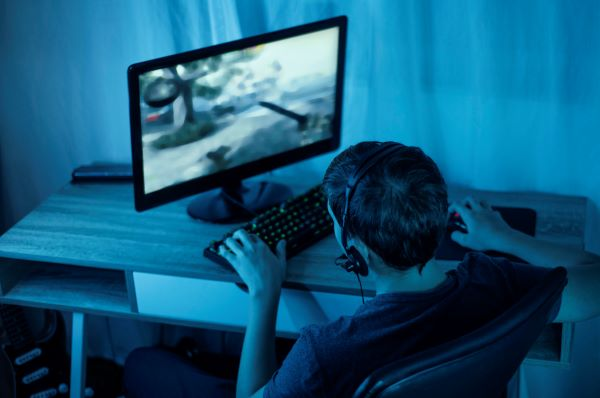

Interactivité et coopération : Les jeux vidéo, en particulier les jeux multijoueurs en ligne (MMO, jeux de tir en équipe, jeux de stratégie), créent un environnement interactif où les joueurs doivent collaborer pour atteindre des objectifs communs. Cette coopération se base souvent sur la nécessité de bien coordonner les actions, de planifier des stratégies en groupe, et d’échanger des informations en temps réel. Par exemple, dans un jeu de tir à la première personne en ligne (FPS), les joueurs doivent se répartir les rôles (sniper, tank, support) et se synchroniser pour réussir. Ce type d’interaction pousse les joueurs à développer des compétences en communication et à bâtir des relations de confiance avec leurs coéquipiers.
Communication et interaction sociale directe : Les jeux vidéo offrent de nombreuses façons de communiquer, que ce soit par le biais de chats texte, vocaux, ou de messages privés. Ces outils permettent non seulement aux joueurs de coordonner leurs efforts dans le jeu, mais également de discuter d’autres sujets, approfondissant ainsi les liens. Dans certains jeux, des discussions sur la vie quotidienne, l’actualité ou des passions partagées se développent au fil des parties, ce qui crée un lien similaire à celui des amitiés hors ligne. Les plateformes comme Discord, utilisées par de nombreux joueurs, étendent ces interactions au-delà du jeu, permettant de maintenir le lien social même en dehors des sessions de jeu.
Partage d’intérêts communs et de cultures : Les jeux vidéo rassemblent des individus autour d’intérêts spécifiques, qu’il s’agisse de jeux de rôle (RPG), de simulation, ou encore de jeux de compétition. Ce partage d’un centre d’intérêt commun fournit une base solide pour créer des liens. Les discussions tournent souvent autour de stratégies, de théories sur le jeu, de comparaisons d’expériences, ou d’échanges sur les dernières mises à jour. De plus, certains jeux incluent des éléments de culture populaire, des références historiques ou des thèmes narratifs profonds, ce qui pousse les joueurs à réfléchir et à échanger sur des sujets plus vastes. Le jeu devient ainsi un espace où les joueurs créent et partagent des récits collectifs.
Appartenance à des communautés de jeu : Dans de nombreux jeux en ligne, les joueurs s’organisent en guildes, clans, ou équipes, formant ainsi des micro-communautés avec leurs propres codes, règles, et cultures. Ces groupes permettent aux membres de se sentir intégrés et soutenus. Les guildes dans les MMO, par exemple, sont des structures sociales très développées, avec des hiérarchies internes, des objectifs communs (comme participer à des raids ou des événements), et souvent un fort sentiment de loyauté entre les membres. La dynamique de groupe favorise l’entraide, avec des joueurs expérimentés qui encadrent les novices, renforçant ainsi la solidarité et l’interdépendance.
Rituel et régularité des interactions : Les jeux vidéo, par leur nature, encouragent des interactions fréquentes et régulières. Des événements quotidiens ou hebdomadaires dans les jeux (quêtes, tournois, etc.) incitent les joueurs à revenir régulièrement, créant ainsi des habitudes d’interaction sociale. Cette régularité aide à développer des relations similaires à celles que l’on peut observer dans des clubs sportifs ou des groupes d’amis qui se retrouvent périodiquement. À force de jouer ensemble, des relations personnelles se développent, allant parfois au-delà du simple cadre du jeu pour devenir de véritables amitiés durables.
Surmonter l’éloignement géographique : Un des principaux avantages des jeux vidéo est leur capacité à connecter des personnes qui se trouvent dans des endroits géographiquement éloignés. Que l’on vive dans des pays différents ou simplement à plusieurs heures de route, les jeux vidéo permettent de maintenir des relations à distance en offrant un espace commun pour se retrouver. Cela est particulièrement important dans un monde globalisé où les amis et la famille peuvent être dispersés à travers le globe. Les jeux vidéo deviennent ainsi un moyen de "raccourcir" les distances et de créer un environnement où les barrières géographiques sont abolies.
Réduire la timidité et l’anxiété sociale : Les jeux vidéo peuvent être un refuge pour les personnes souffrant d’anxiété sociale ou de timidité, car ils offrent une forme d’interaction dématérialisée. En jouant, les individus peuvent se concentrer sur le jeu lui-même tout en interagissant avec d’autres joueurs, ce qui peut réduire la pression associée aux interactions sociales directes. L’absence de confrontation physique permet souvent de s’ouvrir plus facilement, et la focalisation sur des objectifs communs atténue la peur du jugement. Pour certains, les jeux vidéo sont un tremplin vers des interactions sociales plus affirmées, leur permettant de prendre confiance en eux dans un espace contrôlé.
Créer des liens malgré les barrières sociales : Les jeux vidéo permettent de transcender certaines barrières sociales habituelles telles que les différences d'âge, de classe sociale, de genre ou de culture. Dans les mondes virtuels, ces différences sont souvent moins visibles ou moins pertinentes, laissant place à des relations centrées sur l'expérience de jeu elle-même. Cela permet à des personnes qui, dans d’autres contextes, n’auraient peut-être jamais eu l’opportunité de se rencontrer ou de se lier, de créer des connexions fortes. Les communautés de jeu sont souvent hétérogènes, rassemblant des joueurs de milieux très divers, ce qui favorise l’ouverture d’esprit et l’échange interculturel.
Permettre la socialisation pour les personnes isolées : Pour ceux qui sont isolés pour des raisons de mobilité réduite, de handicap, ou simplement parce qu’ils vivent dans des zones rurales où les opportunités de socialisation sont limitées, les jeux vidéo deviennent une véritable bouée de sauvetage. Ils offrent un moyen de rester connecté au monde et d'interagir avec d'autres personnes, même si les contacts physiques sont rares ou difficiles. Cette possibilité de maintenir des relations sociales malgré l'isolement physique aide à lutter contre la solitude et favorise un sentiment de bien-être.
S’adapter aux contraintes de temps : La flexibilité temporelle des jeux vidéo est un autre facteur qui contribue à leur rôle dans le lien social. Contrairement aux événements sociaux traditionnels qui nécessitent une coordination des agendas, les jeux vidéo peuvent être joués à n’importe quelle heure, permettant aux joueurs de se retrouver malgré des horaires chargés ou décalés. Cela est particulièrement bénéfique pour ceux qui ont des emplois du temps irréguliers (travail de nuit, emploi du temps universitaire changeant) ou pour des groupes d’amis qui vivent dans des fuseaux horaires différents. Cette souplesse temporelle permet de maintenir des liens sociaux que les contraintes du monde réel rendraient plus difficiles à entretenir.